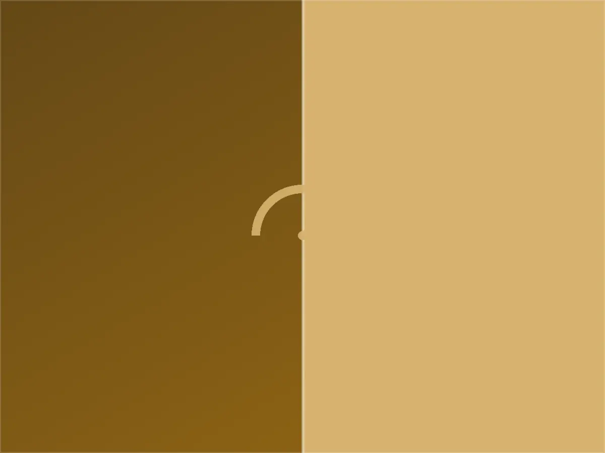
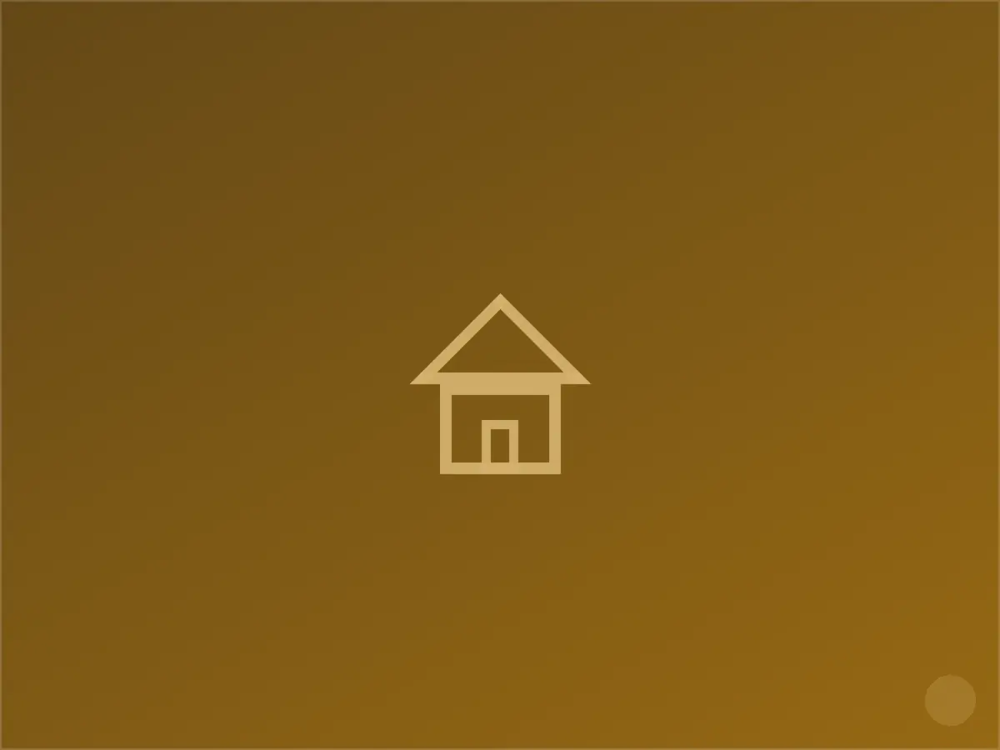

كهربائي في حي غرب النسيم، الرياض
قبل أن نصل لأي منزل في غرب النسيم، عادة ما نسأل ثلاثة أسئلة قصيرة: هل المبنى شقق أم فيلا؟ هل اللوحة داخل الوحدة أم مشتركة في الدرج؟ ومتى آخر مرة تم فحص القاطع الرئيسي؟ هذه الأسئلة البسيطة توفر علينا وعلى العميل وقتاً كبيراً، لأن غرب النسيم امتداد سكني أحدث نسبياً من الحي الأصلي، ويغلب عليه طابع الشقق والعمائر السكنية متوسطة الحجم.
الفرق هنا أن أغلب الأعطال ليست في "عمر" التمديد بقدر ما هي في التوزيع: وحدة سكنية تشتكي من فصل متكرر بينما الجيران بلا مشكلة، أو إنارة درج مشترك تحتاج صيانة دورية لا يلتفت لها أحد السكان بمفرده.
خدماتنا الكهربائية في غرب النسيم
نقدّم في حي غرب النسيم كامل الأعمال الكهربائية المنزلية: نُصلح الأعطال الطارئة، نُنفّذ الصيانة الدورية للوحات التوزيع، ونُنجز التمديدات الجديدة والتوسعات بما يشمل تمديد الأسلاك، تركيب المفاتيح والمقابس، وتأهيل نقاط التأريض. نغطي أيضاً تركيب الإنارة الداخلية والخارجية وربط الدوائر بأجهزة التكييف والمطابخ الكهربائية.

خصوصية حي غرب النسيم — ما نلاحظه في هذا الحي تحديداً
أنواع المباني الشائعة:
- عمائر سكنية من ٤ إلى ٦ أدوار بشقق متعددة ولوحات توزيع في الدرج المشترك
- شقق تمليك حديثة نسبياً بلوحة فرعية داخل كل وحدة
- فلل صغيرة ومتوسطة الحجم على أطراف الحي

لماذا يختارنا سكان غرب النسيم
استجابة سريعة
نصل عادة خلال ٤٥-٦٠ دقيقة من البلاغ، ولدينا فريق مخصص لتغطية النسيم والأحياء المحيطة به.
خبرة بطراز الحي
نوفر لمالكي العمائر في غرب النسيم زيارة فحص شاملة للوحة المشتركة وترقيم كل قاطع باسم الوحدة التي يخدمها، لتسهيل أي صيانة لاحقة.
ضمان مكتوب
كل عمل تمديد أو إصلاح يصدر له ضمان مكتوب يغطي القطع والتنفيذ لمدة تصل إلى سنتين.
خطوات العمل
التواصل
اتصال أو رسالة واتساب، نطلب وصفاً مختصراً للعطل لتجهيز الفني والأدوات المناسبة قبل التحرك.
المعاينة
فحص ميداني دقيق للوحة والدائرة المتأثرة، وتوضيح السبب والتكلفة قبل البدء بأي تنفيذ.
التنفيذ
إصلاح أو تمديد وفق ما تم الاتفاق عليه، مع اختبار الدائرة بعد الانتهاء وتسليم ضمان مكتوب.
أسئلة شائعة من سكان غرب النسيم
الفصل يحدث في شقتي فقط، هل المشكلة من العمارة أم من الشقة؟
في أغلب الحالات تكون من الدائرة الداخلية للشقة، ونتحقق من ذلك بفحص القاطع الفرعي أولاً قبل الانتقال إلى اللوحة الرئيسية.
هل تصلحون إنارة الدرج المشترك في العمائر؟
نعم، ونقترح عادة عقد صيانة دورية بسيط يغطي إنارة الممرات والدرج لتفادي البلاغات المتكررة من السكان.
لا يوجد توثيق لقواطع اللوحة، كيف تتعاملون مع ذلك؟
نفحص كل دائرة يدوياً ونعيد ترقيم القواطع باسم كل وحدة، ونسلّم نسخة موثقة لإدارة العمارة.